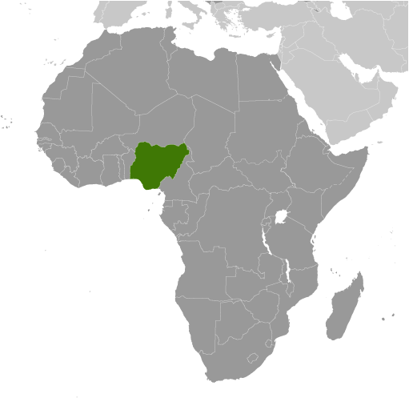
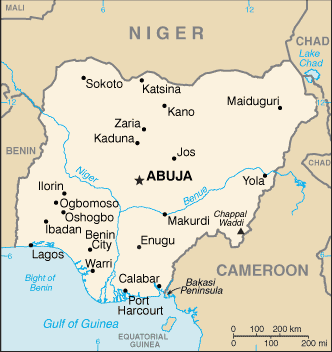
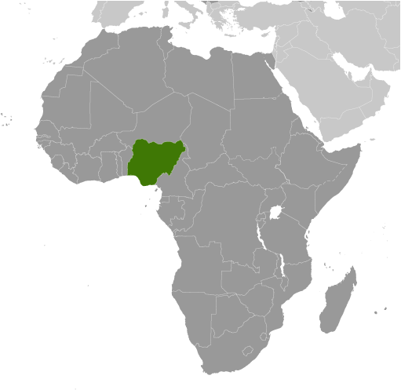
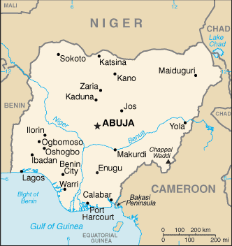

Africa :: NIGERIA
Introduction :: NIGERIA
-
British influence and control over what would become Nigeria and Africa's most populous country grew through the 19th century. A series of constitutions after World War II granted Nigeria greater autonomy. After independence in 1960, politics were marked by coups and mostly military rule, until the death of a military head of state in 1998 allowed for a political transition. In 1999, a new constitution was adopted and a peaceful transition to civilian government was completed. The government continues to face the daunting task of institutionalizing democracy and reforming a petroleum-based economy, whose revenues have been squandered through corruption and mismanagement. In addition, Nigeria continues to experience longstanding ethnic and religious tensions. Although both the 2003 and 2007 presidential elections were marred by significant irregularities and violence, Nigeria is currently experiencing its longest period of civilian rule since independence. The general elections of April 2007 marked the first civilian-to-civilian transfer of power in the country's history and the elections of 2011 were generally regarded as credible. The 2015 election is considered the most well run in Nigeria since the return to civilian rule, with the umbrella opposition party, the All Progressives Congress, defeating the long-ruling People's Democratic Party that had governed since 1999.
Geography :: NIGERIA
-
Western Africa, bordering the Gulf of Guinea, between Benin and Cameroon10 00 N, 8 00 EAfricatotal: 923,768 sq kmland: 910,768 sq kmwater: 13,000 sq kmcountry comparison to the world: 33about six times the size of Georgia; slightly more than twice the size of Californiatotal: 4,477 kmborder countries (4): Benin 809 km, Cameroon 1,975 km, Chad 85 km, Niger 1,608 km853 kmterritorial sea: 12 nmexclusive economic zone: 200 nmcontinental shelf: 200-m depth or to the depth of exploitationvaries; equatorial in south, tropical in center, arid in northsouthern lowlands merge into central hills and plateaus; mountains in southeast, plains in northmean elevation: 380 melevation extremes: lowest point: Atlantic Ocean 0 mhighest point: Chappal Waddi 2,419 mnatural gas, petroleum, tin, iron ore, coal, limestone, niobium, lead, zinc, arable landagricultural land: 78%arable land 37.3%; permanent crops 7.4%; permanent pasture 33.3%forest: 9.5%other: 12.5% (2011 est.)2,930 sq km (2012)largest population of any African nation; significant population clusters are scattered throughout the country, with the highest density areas being in the south and southwestperiodic droughts; floodingsoil degradation; rapid deforestation; urban air and water pollution; desertification; oil pollution - water, air, and soil; has suffered serious damage from oil spills; loss of arable land; rapid urbanizationparty to: Biodiversity, Climate Change, Climate Change-Kyoto Protocol, Desertification, Endangered Species, Hazardous Wastes, Law of the Sea, Marine Dumping, Marine Life Conservation, Ozone Layer Protection, Ship Pollution, Wetlandssigned, but not ratified: none of the selected agreementsthe Niger River enters the country in the northwest and flows southward through tropical rain forests and swamps to its delta in the Gulf of Guinea
People and Society :: NIGERIA
-
190,632,261note: estimates for this country explicitly take into account the effects of excess mortality due to AIDS; this can result in lower life expectancy, higher infant mortality, higher death rates, lower population growth rates, and changes in the distribution of population by age and sex than would otherwise be expected (July 2017 est.)country comparison to the world: 7noun: Nigerian(s)adjective: NigerianNigeria, Africa's most populous country, is composed of more than 250 ethnic groups; the most populous and politically influential are: Hausa and the Fulani 29%, Yoruba 21%, Igbo (Ibo) 18%, Ijaw 10%, Kanuri 4%, Ibibio 3.5%, Tiv 2.5%English (official), Hausa, Yoruba, Igbo (Ibo), Fulani, over 500 additional indigenous languagesMuslim 50%, Christian 40%, indigenous beliefs 10%Nigeria’s population is projected to grow from more than 186 million people in 2016 to 392 million in 2050, becoming the world’s fourth most populous country. Nigeria’s sustained high population growth rate will continue for the foreseeable future because of population momentum and its high birth rate. Abuja has not successfully implemented family planning programs to reduce and space births because of a lack of political will, government financing, and the availability and affordability of services and products, as well as a cultural preference for large families. Increased educational attainment, especially among women, and improvements in health care are needed to encourage and to better enable parents to opt for smaller families.Nigeria needs to harness the potential of its burgeoning youth population in order to boost economic development, reduce widespread poverty, and channel large numbers of unemployed youth into productive activities and away from ongoing religious and ethnic violence. While most movement of Nigerians is internal, significant emigration regionally and to the West provides an outlet for Nigerians looking for economic opportunities, seeking asylum, and increasingly pursuing higher education. Immigration largely of West Africans continues to be insufficient to offset emigration and the loss of highly skilled workers. Nigeria also is a major source, transit, and destination country for forced labor and sex trafficking.0-14 years: 42.54% (male 41,506,288/female 39,595,720)15-24 years: 19.61% (male 19,094,899/female 18,289,513)25-54 years: 30.74% (male 30,066,196/female 28,537,846)55-64 years: 3.97% (male 3,699,947/female 3,870,080)65 years and over: 3.13% (male 2,825,134/female 3,146,638) (2017 est.)total dependency ratio: 88.2youth dependency ratio: 83elderly dependency ratio: 5.1potential support ratio: 19.4 (2015 est.)total: 18.4 yearsmale: 18.3 yearsfemale: 18.5 years (2017 est.)country comparison to the world: 2122.43% (2017 est.)country comparison to the world: 3136.9 births/1,000 population (2017 est.)country comparison to the world: 1312.4 deaths/1,000 population (2017 est.)country comparison to the world: 19-0.2 migrant(s)/1,000 population (2017 est.)country comparison to the world: 107largest population of any African nation; significant population clusters are scattered throughout the country, with the highest density areas being in the south and southwesturban population: 49.4% of total population (2017)rate of urbanization: 4.3% annual rate of change (2015-20 est.)Lagos 13.123 million; Kano 3.587 million; Ibadan 3.16 million; ABUJA (capital) 2.44 million; Port Harcourt 2.343 million; Benin City 1.496 million (2015)at birth: 1.06 male(s)/female0-14 years: 1.05 male(s)/female15-24 years: 1.04 male(s)/female25-54 years: 1.05 male(s)/female55-64 years: 0.95 male(s)/female65 years and over: 0.91 male(s)/femaletotal population: 1.04 male(s)/female (2016 est.)20.3 yearsnote: median age at first birth among women 25-29 (2013 est.)814 deaths/100,000 live births (2015 est.)country comparison to the world: 4total: 69.8 deaths/1,000 live birthsmale: 74.5 deaths/1,000 live birthsfemale: 64.8 deaths/1,000 live births (2017 est.)country comparison to the world: 8total population: 53.8 yearsmale: 52.8 yearsfemale: 55 years (2017 est.)country comparison to the world: 2145.07 children born/woman (2017 est.)country comparison to the world: 1320.4% (2016)3.7% of GDP (2014)country comparison to the world: 1670.38 physicians/1,000 population (2009)improved:urban: 80.8% of populationrural: 57.3% of populationtotal: 68.5% of populationunimproved:urban: 19.2% of populationrural: 42.7% of populationtotal: 31.5% of population (2015 est.)improved:urban: 32.8% of populationrural: 25.4% of populationtotal: 29% of populationunimproved:urban: 67.2% of populationrural: 74.6% of populationtotal: 71% of population (2015 est.)2.9% (2016 est.)country comparison to the world: 213.2 million (2016 est.)country comparison to the world: 2160,000 (2016 est.)country comparison to the world: 1degree of risk: very highfood or waterborne diseases: bacterial and protozoal diarrhea, hepatitis A and E, and typhoid fevervectorborne diseases: malaria, dengue fever, and yellow feverwater contact diseases: leptospirosis and schistosomiasisrespiratory disease: meningococcal meningitisaerosolized dust or soil contact disease: Lassa feveranimal contact disease: rabies (2016)8.9% (2016)country comparison to the world: 14519.4% (2015)country comparison to the world: 12NAdefinition: age 15 and over can read and writetotal population: 59.6%male: 69.2%female: 49.7% (2015 est.)total: 9 yearsmale: 9 yearsfemale: 8 years (2011)total: 7.7%male: NAfemale: NA (2015 est.)
Government :: NIGERIA
-
conventional long form: Federal Republic of Nigeriaconventional short form: Nigeriaetymology: named for the Niger River that flows through the west of the country to the Atlantic Ocean; from a native term "Ni Gir" meaning "River Gir"federal presidential republicname: Abujageographic coordinates: 9 05 N, 7 32 Etime difference: UTC+1 (6 hours ahead of Washington, DC, during Standard Time)36 states and 1 territory*; Abia, Adamawa, Akwa Ibom, Anambra, Bauchi, Bayelsa, Benue, Borno, Cross River, Delta, Ebonyi, Edo, Ekiti, Enugu, Federal Capital Territory*, Gombe, Imo, Jigawa, Kaduna, Kano, Katsina, Kebbi, Kogi, Kwara, Lagos, Nasarawa, Niger, Ogun, Ondo, Osun, Oyo, Plateau, Rivers, Sokoto, Taraba, Yobe, Zamfara1 October 1960 (from the UK)Independence Day (National Day), 1 October (1960)history: several previous; latest adopted 5 May 1999, effective 29 May 1999amendments: proposed by the National Assembly; passage requires at least two-thirds majority vote of both houses and approval by the Houses of Assembly of at least two-thirds of the states; amendments to constitutional articles on the creation of a new state, fundamental constitutional rights, or constitution-amending procedures requires at least four-fifths majority vote by both houses of the National Assembly and approval by the Houses of Assembly in at least two-thirds of the states; passage of amendments limited to the creation of a new state require at least two-thirds majority by the proposing National Assembly house and approval by the Houses of Assembly in two-thirds of the states; amended several times, last in 2012 (2017)mixed legal system of English common law, Islamic law (in 12 northern states), and traditional lawaccepts compulsory ICJ jurisdiction with reservations; accepts ICCt jurisdictioncitizenship by birth: nocitizenship by descent only: at least one parent must be a citizen of Nigeriadual citizenship recognized: yesresidency requirement for naturalization: 15 years18 years of age; universalchief of state: President Maj. Gen. (ret.) Muhammadu BUHARI (since 29 May 2015); Vice President Oluyemi "Yemi" OSINBAJO (since 29 May 2015); note - the president is both chief of state and head of governmenthead of government: President Maj.Gen. (ret.) Muhammadu BUHARI (since 29 May 2015); Vice President Oluyemi "Yemi" OSINBAJO (since 29 May 2015)cabinet: Federal Executive Council appointed by the presidentelections/appointments: president directly elected by 'qualified' majority popular vote and at least 25% of the votes cast in 24 of Nigeria's 36 states; president elected for a 4-year term (eligible for a second term); election last held on 28-29 March 2015 (next to be held on 19 February 2019)election results: Muhammadu BUHARI elected president; percent of vote - Muhammadu BUHARI (APC) 54%, Goodluck JONATHAN (PDP) 45%, other 1%description: bicameral National Assembly consists of the Senate (109 seats - 3 each for the 36 states and 1 for Abuja; members directly elected in single-seat constituencies by simple majority vote to serve 4-year terms) and the House of Representatives (360 seats; members directly elected in single-seat constituencies by simple majority vote to serve 4-year terms)elections: Senate - last held on 28-29 March 2015 (next to be held in February 2019); House of Representatives - last held on 28-29 March 2015 (next to be held in 2019)election results: Senate - percent of vote by party - NA; seats by party - APC 60, PDP 49; House of Representatives - percent of vote by party - NA; seats by party - APC 225, PDP 125, other 10note: Senate - seats by party as of April 2017 - APC 66, PDP 43 (with continuing defections to the APC)highest court(s): Supreme Court (consists of the chief justice and 15 justices)judge selection and term of office: judges appointed by the president on the recommendation of the National Judicial Council, a 23-member independent body of federal and state judicial officials; judge appointments confirmed by the Senate; judges serve until age 70subordinate courts: Court of Appeal; Federal High Court; High Court of the Federal Capital Territory; Sharia Court of Appeal of the Federal Capital Territory; Customary Court of Appeal of the Federal Capital Territory; state court system similar in structure to federal systemAccord Party or ACC [Mohammad Lawal MALADO]All Progressives Congress or APC [John Odigie OYEGUN]All Progressives Grand Alliance or APGA [Victor C. UMEH]Democratic Peoples Party or DPP [Biodun OGUNBIYI]Labor Party or LP [Alhai Abdulkadir ABDULSALAM]Peoples Democratic Party or PDP [Ali Modu SHERIFF]Academic Staff Union for Universities or ASUUCampaign for Democracy or CDCivil Liberties Organization or CLOCommittee for the Defense of Human Rights or CDHRConstitutional Right Project or CRPHuman Right AfricaNational Association of Democratic Lawyers or NADLNational Association of Nigerian Students or NANSNigerian Bar Association or NBANigerian Labor Congress or NLCNigerian Medical Association or NMAUniversal Defenders of Democracy or UDDother: mediaACP, AfDB, AU, C, CD, D-8, ECOWAS, EITI (compliant country), FAO, G-15, G-24, G-77, IAEA, IBRD, ICAO, ICC (national committees), ICCt, ICRM, IDA, IDB, IFAD, IFC, IFRCS, IHO, ILO, IMF, IMO, IMSO, Interpol, IOC, IOM, IPU, ISO, ITSO, ITU, ITUC (NGOs), MIGA, MINURSO, MINUSMA, MONUSCO, NAM, OAS (observer), OIC, OPCW, OPEC, PCA, UN, UNAMID, UNCTAD, UNESCO, UNHCR, UNIDO, UNIFIL, UNISFA, UNITAR, UNMIL, UNMISS, UNOCI, UNWTO, UPU, WCO, WFTU (NGOs), WHO, WIPO, WMO, WTOchief of mission: Ambassador (vacant); Charge d'Affaires Hakeem Toyin BALOGUN (since 27 August 2015)chancery: 3519 International Court NW, Washington, DC 20008telephone: [1] (202) 986-8400FAX: [1] (202) 362-6541consulate(s) general: Atlanta, New Yorkchief of mission: Ambassador W. Stuart SYMINGTON (since 1 December 2016)embassy: Plot 1075 Diplomatic Drive, Central District Area, Abujamailing address: P. O. Box 5760, Garki, Abujatelephone: [234] (9) 461-4000FAX: [234] (9) 461-4036consulate(s): Lagosthree equal vertical bands of green (hoist side), white, and green; the color green represents the forests and abundant natural wealth of the country, white stands for peace and unityeagle; national colors: green, whitename: "Arise Oh Compatriots, Nigeria's Call Obey"lyrics/music: John A. ILECHUKWU, Eme Etim AKPAN, B. A. OGUNNAIKE, Sotu OMOIGUI and P. O. ADERIBIGBE/Benedict Elide ODIASEnote: adopted 1978; lyrics are a mixture of the five top entries in a national contest
Economy :: NIGERIA
-
Nigeria is one of Sub Saharan Africa’s largest economies and relies heavily on oil as its main source of foreign exchange earnings and government revenues. Following the 2008-09 global financial crises, the banking sector was effectively recapitalized and regulation enhanced. Since then, Nigeria’s economic growth has been driven by growth in agriculture, telecommunications, and services. Economic diversification and strong growth have not translated into a significant decline in poverty levels; however, over 62% of Nigeria's 170 million people still live in extreme poverty.Despite its strong fundamentals, oil-rich Nigeria has been hobbled by inadequate power supply, lack of infrastructure, delays in the passage of legislative reforms, an inefficient property registration system, restrictive trade policies, an inconsistent regulatory environment, a slow and ineffective judicial system, unreliable dispute resolution mechanisms, insecurity, and pervasive corruption. Regulatory constraints and security risks have limited new investment in oil and natural gas, and Nigeria's oil production has contracted every year since 2012.President BUHARI, elected in March 2015, has established a cabinet of economic ministers that includes several technocrats, and he has announced plans to increase transparency, diversify the economy away from oil, and improve fiscal management, but his reliance on the Central Bank governor has led to overwhelmingly protectionist policies aimed at defending the naira from further devaluation. President BUHARI ran on an anti-corruption platform, and has made some headway in alleviating corruption, such as an implementation of a Treasury Single Account that allows the government to better manage its resources. The government also is working to develop stronger public-private partnerships for roads, agriculture, and power.Partly because of lower oil prices, Nigeria entered a recession in 2016. However, the medium-term outlook for Nigeria is positive, assuming oil output stabilizes and oil prices recover.$1.09 trillion (2016 est.)$1.094 trillion (2015 est.)$1.054 trillion (2014 est.)note: data are in 2016 dollarscountry comparison to the world: 24$405.4 billion (2016 est.)-1.6% (2016 est.)2.7% (2015 est.)6.3% (2014 est.)country comparison to the world: 201$5,900 (2016 est.)$6,200 (2015 est.)$6,200 (2014 est.)note: data are in 2016 dollarscountry comparison to the world: 16213.2% of GDP (2016 est.)12.3% of GDP (2015 est.)16% of GDP (2014 est.)country comparison to the world: 118household consumption: 80.8%government consumption: 6.6%investment in fixed capital: 14.8%investment in inventories: 0%exports of goods and services: 9.9%imports of goods and services: -12.1% (2016 est.)agriculture: 21.2%industry: 18.4%services: 60.4% (2016 est.)cocoa, peanuts, cotton, palm oil, corn, rice, sorghum, millet, cassava (manioc, tapioca), yams, rubber; cattle, sheep, goats, pigs; timber; fishcrude oil, coal, tin, columbite; rubber products, wood; hides and skins, textiles, cement and other construction materials, food products, footwear, chemicals, fertilizer, printing, ceramics, steel-8.9% (2016 est.)country comparison to the world: 19758.81 million (2016 est.)country comparison to the world: 11agriculture: 70%industry: 10%services: 20% (1999 est.)13.4% (2016 est.)23.9% (2016 est.)country comparison to the world: 16570% (2010 est.)lowest 10%: 1.8%highest 10%: 38.2% (2010 est.)48.8 (2013)50.6 (1997)country comparison to the world: 21revenues: $12.07 billionexpenditures: $23.22 billion (2016 est.)3% of GDP (2016 est.)country comparison to the world: 218-2.7% of GDP (2016 est.)country comparison to the world: 11014.3% of GDP (2016 est.)11.5% of GDP (2015 est.)country comparison to the world: 192calendar year15.7% (2016 est.)9% (2015 est.)country comparison to the world: 2154.25% (31 December 2010)6% (31 December 2009)country comparison to the world: 9516.87% (31 December 2016 est.)16.85% (31 December 2015 est.)country comparison to the world: 27$37.45 billion (31 December 2016 est.)$43.62 billion (31 December 2015 est.)country comparison to the world: 57$77.91 billion (31 December 2016 est.)$101.9 billion (31 December 2015 est.)country comparison to the world: 58$89.18 billion (31 December 2016 est.)$110 billion (31 December 2015 est.)country comparison to the world: 57$53.07 billion (31 December 2016 est.)$63.47 billion (31 December 2014 est.)$80.61 billion (31 December 2013 est.)country comparison to the world: 50$2.722 billion (2016 est.)$-15.44 billion (2015 est.)country comparison to the world: 31$34.7 billion (2016 est.)$45.89 billion (2015 est.)country comparison to the world: 53petroleum and petroleum products 95%, cocoa, rubber (2012 est.)India 34%, US 9%, Spain 5.9%, France 5.8%, South Africa 5.5%, Canada 5.1% (2016)$35.24 billion (2016 est.)$52.33 billion (2015 est.)country comparison to the world: 58machinery, chemicals, transport equipment, manufactured goods, food and live animalsChina 20.3%, US 8.3%, Belgium 7.6%, UK 4.4%, Netherlands 4.1% (2016)$25.84 billion (31 December 2016 est.)$29.07 billion (31 December 2015 est.)country comparison to the world: 51$31.41 billion (31 December 2016 est.)$29.03 billion (31 December 2015 est.)country comparison to the world: 77$113.4 billion (31 December 2016 est.)$91.49 billion (31 December 2015 est.)country comparison to the world: 44$15.65 billion (31 December 2016 est.)$11.92 billion (31 December 2015 est.)country comparison to the world: 58nairas (NGN) per US dollar -253 (2016 est.)253 (2015 est.)192.73 (2014 est.)158.55 (2013 est.)156.81 (2012 est.)
Energy :: NIGERIA
-
population without electricity: 95,500,000electrification - total population: 45%electrification - urban areas: 55%electrification - rural areas: 37% (2013)29.83 billion kWh (2015 est.)country comparison to the world: 6524.57 billion kWh (2015 est.)country comparison to the world: 680 kWh (2016 est.)country comparison to the world: 1780 kWh (2016 est.)country comparison to the world: 18110.48 million kW (2015 est.)country comparison to the world: 5980.3% of total installed capacity (2015 est.)country comparison to the world: 880% of total installed capacity (2015 est.)country comparison to the world: 15419.5% of total installed capacity (2015 est.)country comparison to the world: 900.2% of total installed capacity (2015 est.)country comparison to the world: 1621.871 million bbl/day (2016 est.)country comparison to the world: 132.279 million bbl/day (2014 est.)country comparison to the world: 60 bbl/day (2014 est.)country comparison to the world: 17237.06 billion bbl (1 January 2017 es)country comparison to the world: 1070,140 bbl/day (2014 est.)country comparison to the world: 72316,000 bbl/day (2015 est.)country comparison to the world: 4311,010 bbl/day (2014 est.)country comparison to the world: 82180,100 bbl/day (2014 est.)country comparison to the world: 3545.15 billion cu m (2015 est.)country comparison to the world: 1826.86 billion cu m (2015 est.)country comparison to the world: 3826.33 billion cu m (2015 est.)country comparison to the world: 140 cu m (2013 est.)country comparison to the world: 1655.284 trillion cu m (1 January 2017 es)country comparison to the world: 997 million Mt (2013 est.)country comparison to the world: 40
Communications :: NIGERIA
-
total subscriptions: 154,513subscriptions per 100 inhabitants: less than 1 (July 2016 est.)country comparison to the world: 130total: 154,342,168subscriptions per 100 inhabitants: 83 (July 2016 est.)country comparison to the world: 9general assessment: further expansion and modernization of the fixed-line telephone network is needed; network quality remains a problemdomestic: fixed-line subscribership remains less than 1 per 100 persons; mobile-cellular services growing rapidly, in part responding to the shortcomings of the fixed-line network; multiple cellular providers operate nationally with subscribership base over 80 per 100 personsinternational: country code - 234; landing point for the SAT-3/WASC fiber-optic submarine cable that provides connectivity to Europe and Asia; satellite earth stations - 3 Intelsat (2 Atlantic Ocean and 1 Indian Ocean) (2016)nearly 70 federal government-controlled national and regional TV stations; all 36 states operate TV stations; several private TV stations operational; cable and satellite TV subscription services are available; network of federal government-controlled national, regional, and state radio stations; roughly 40 state government-owned radio stations typically carry their own programs except for news broadcasts; about 20 private radio stations; transmissions of international broadcasters are available (2007).ngtotal: 47,759,904percent of population: 25.7% (July 2016 est.)country comparison to the world: 9
Transportation :: NIGERIA
-
number of registered air carriers: 16inventory of registered aircraft operated by air carriers: 73annual passenger traffic on registered air carriers: 3,223,459annual freight traffic on registered air carriers: 22,400,657 mt-km (2015)5N (2016)54 (2013)country comparison to the world: 88total: 40over 3,047 m: 102,438 to 3,047 m: 121,524 to 2,437 m: 9914 to 1,523 m: 6under 914 m: 3 (2017)total: 141,524 to 2,437 m: 2914 to 1,523 m: 9under 914 m: 3 (2013)5 (2013)condensate 124 km; gas 4,045 km; liquid petroleum gas 164 km; oil 4,441 km; refined products 3,940 km (2013)total: 3,798 kmstandard gauge: 293 km 1.435-m gaugenarrow gauge: 3,505 km 1.067-m gauge (2014)country comparison to the world: 47total: 193,200 kmpaved: 28,980 kmunpaved: 164,220 km (2004)country comparison to the world: 298,600 km (Niger and Benue Rivers and smaller rivers and creeks) (2011)country comparison to the world: 15total: 89by type: cargo 2, chemical tanker 28, liquefied gas 1, passenger/cargo 1, petroleum tanker 56, specialized tanker 1foreign-owned: 3 (India 1, UK 2)registered in other countries: 33 (Bahamas 2, Bermuda 11, Comoros 1, Italy 1, Liberia 4, North Korea 1, Panama 6, Seychelles 1, unknown 6) (2010)country comparison to the world: 55major seaport(s): Bonny Inshore Terminal, Calabar, LagosLNG terminal(s) (export): Bonny Island
Military and Security :: NIGERIA
-
0.43% of GDP (2016)0.42% of GDP (2015)0.41% of GDP (2014)0.47% of GDP (2013)0.5% of GDP (2012)country comparison to the world: 108Nigerian Armed Forces: Army, Navy, Air Force (2013)18 years of age for voluntary military service; no conscription (2012)the International Maritime Bureau reports the territorial and offshore waters in the Niger Delta and Gulf of Guinea as high risk for piracy and armed robbery of ships; in 2016, 36 commercial vessels were boarded or attacked compared with 14 attacks in 2015; in the first half of 2017, 31 crew members were abducted in five reported incidents; half of all reports of vessels being fired upon occur in Nigerian waters; Nigerian pirates have extended the range of their attacks to as far away as Cote d'Ivoire and as far as 100 nm offshore
Transnational Issues :: NIGERIA
-
Joint Border Commission with Cameroon reviewed 2002 ICJ ruling on the entire boundary and bilaterally resolved differences, including June 2006 Greentree Agreement that immediately cedes sovereignty of the Bakassi Peninsula to Cameroon with a phaseout of Nigerian control within two years while resolving patriation issues; the ICJ ruled on an equidistance settlement of Cameroon-Equatorial Guinea-Nigeria maritime boundary in the Gulf of Guinea, but imprecisely defined coordinates in the ICJ decision and a sovereignty dispute between Equatorial Guinea and Cameroon over an island at the mouth of the Ntem River all contribute to the delay in implementation; only Nigeria and Cameroon have heeded the Lake Chad Commission's admonition to ratify the delimitation treaty which also includes the Chad-Niger and Niger-Nigeria boundaries; location of Benin-Niger-Nigeria tripoint is unresolvedIDPs: 1,713,771 (Boko Haram attacks and counterinsurgency efforts in northern Nigeria; communal violence between Christians and Muslims in the middle belt region, political violence; flooding; forced evictions; cattle rustling; competition for resources) (2017)a transit point for heroin and cocaine intended for European, East Asian, and North American markets; consumer of amphetamines; safe haven for Nigerian narcotraffickers operating worldwide; major money-laundering center; massive corruption and criminal activity; Nigeria has improved some anti-money-laundering controls, resulting in its removal from the Financial Action Task Force's (FATF's) Noncooperative Countries and Territories List in June 2006; Nigeria's anti-money-laundering regime continues to be monitored by FATF